Bem-vindos ao BACCstage
Conectando pessoas, ideias e oportunidades.
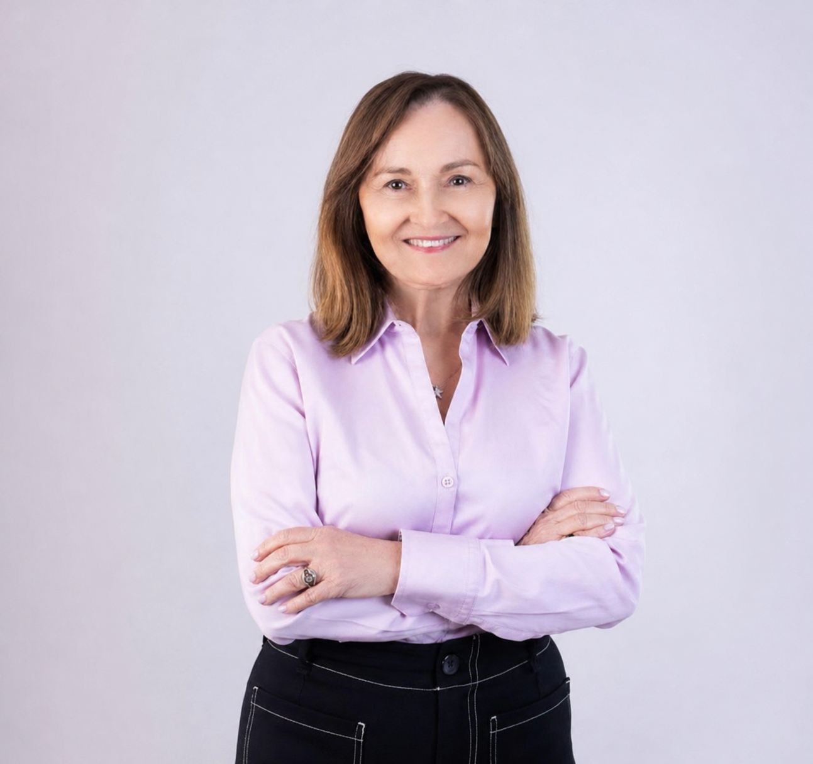
Nossa fundadora
Lucia Jennings
CEO & Founder
Há 30 anos fazendo história, desde 1996.
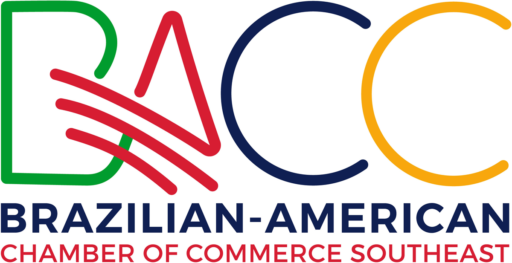
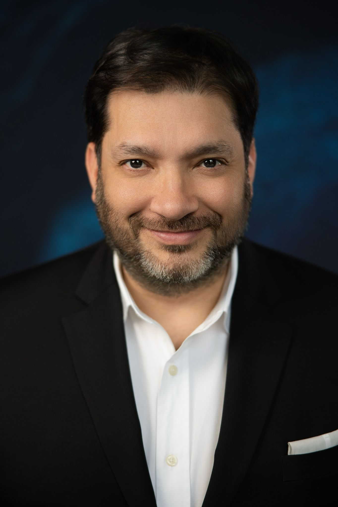
Nosso anfitrião
Ricardo Souza
CEO & Founder

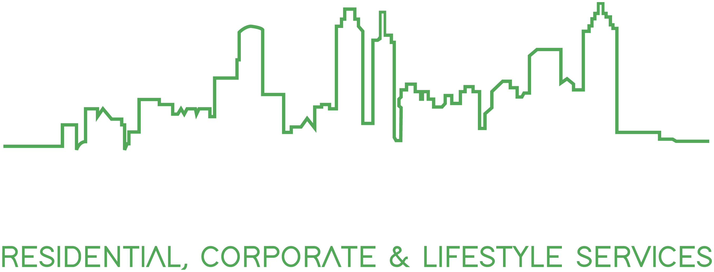
A BACC-SE em movimento
Muito além
dos eventos.
Construímos uma comunidade que cresce a cada encontro.
Cada encontro fortalece conexões, gera oportunidades e aproxima empresários, profissionais e instituições.
Nossos encontros
A comunidade em ação
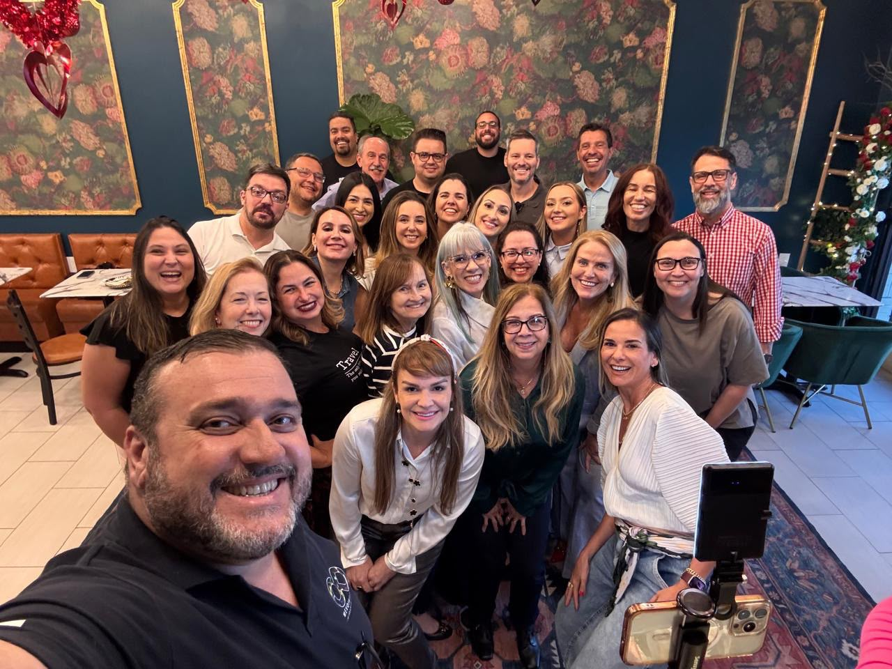
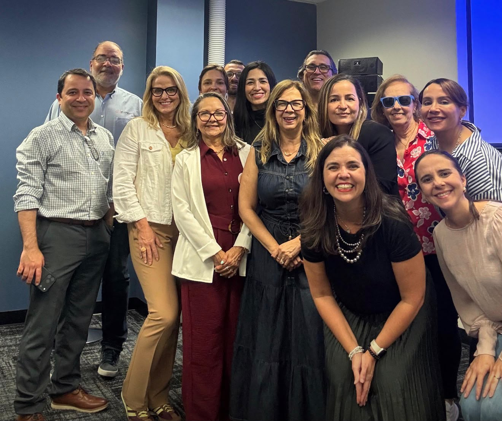
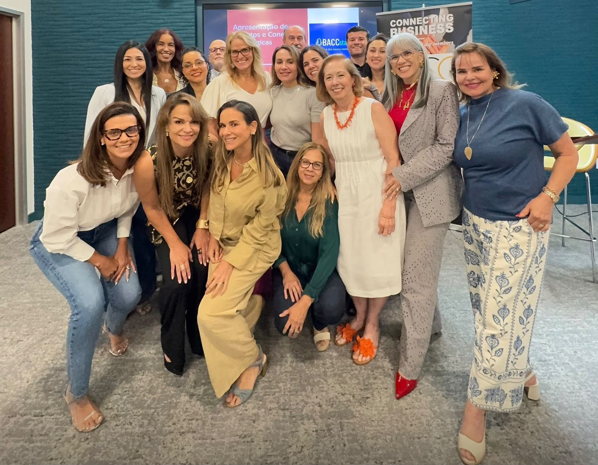
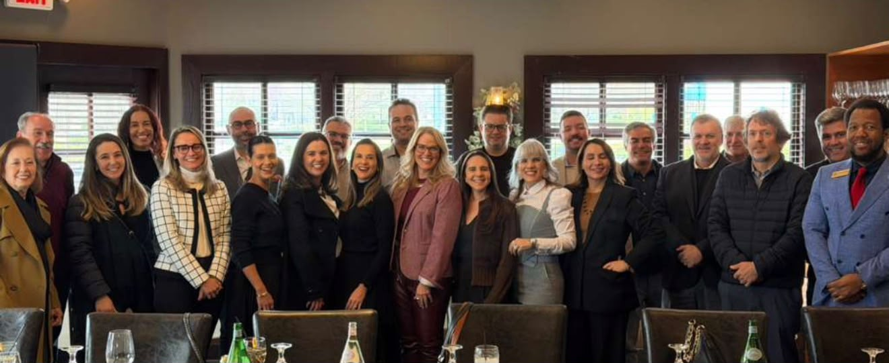
Cada encontro fortalece conexões, gera oportunidades e aproxima empresários, profissionais e instituições.
Programas e eventos
Programas que fortalecem nossa comunidade
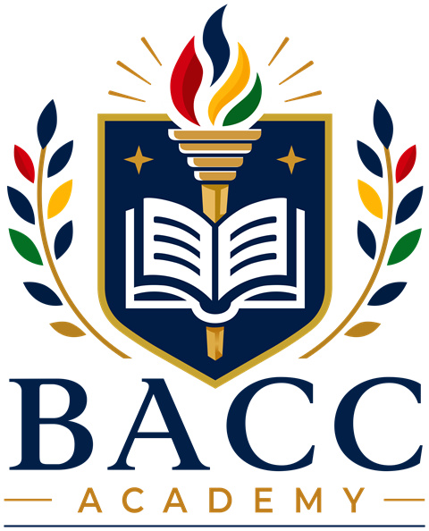
BACC Academy
Educação e desenvolvimento para empreendedores.
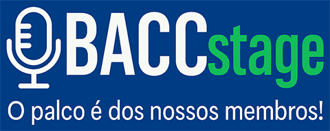
BACCstage
O palco é dos nossos membros.
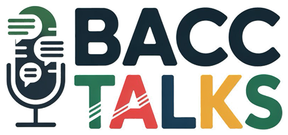
BACCtalks
Conversas que inspiram e conectam.
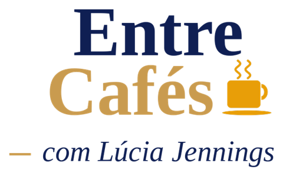
Entre Cafés
Networking próximo e informal.
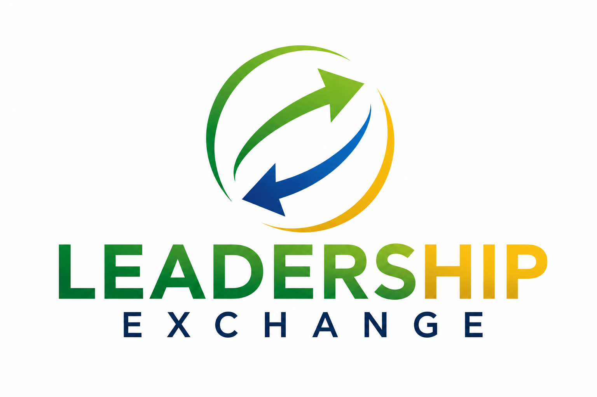
Leadership Exchange Series
Lideranças que trocam e crescem juntas.
International Women's Day
Celebrando e conectando mulheres líderes.
Brazil Economic Outlook
Perspectivas do cenário econômico entre Brasil e EUA.
Parcerias institucionais
Parcerias que ampliam oportunidades
Woodruff Arts Center
Conexão com um dos principais centros culturais dos EUA.
University of Georgia
Universidade, inovação e negócios mais próximos.
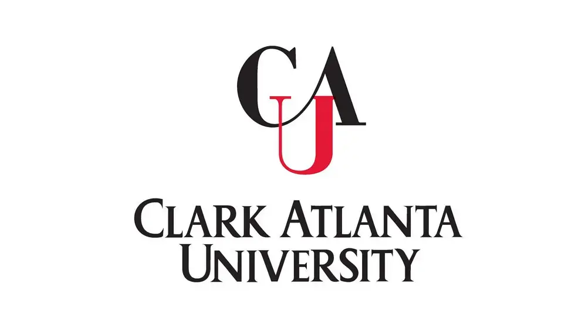
Clark Atlanta University
Academia, tecnologia e desenvolvimento em colaboração.
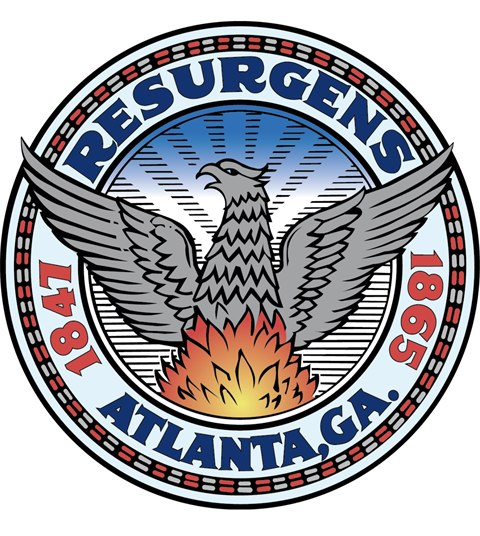
City of Atlanta
Oportunidades por meio de parcerias estratégicas.
Mais conexões. Mais oportunidades. Mais valor para nossos membros.
Calendário 2026 e 2027
O que vem por aí
BACC Academy, Entre Cafés, Leadership Exchange Series, BACCstage e Brazil Economic Outlook: cinco formas de conectar, aprender e crescer juntos.
Nossa convidada
Carol Pepe
Founder & CEO · Oklahoma USA LLC
Importação e Exportação na Prática: oportunidades, desafios e estratégias para fazer negócios entre Brasil e EUA.
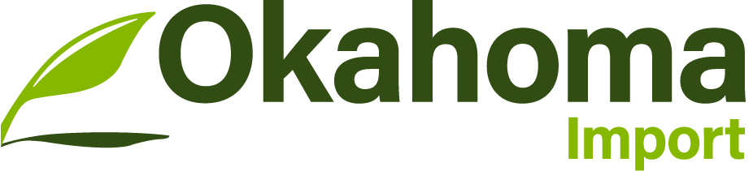
BACC-SE · Novos membros
Sejam bem-vindos à BACC-SE!
Hoje temos a alegria de receber novos membros que passam a fazer parte de uma comunidade comprometida com colaboração, desenvolvimento e conexões estratégicas.
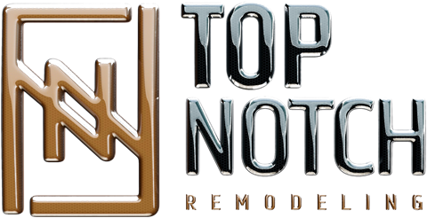
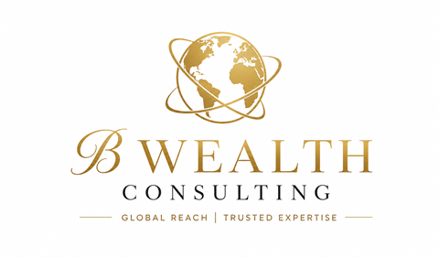
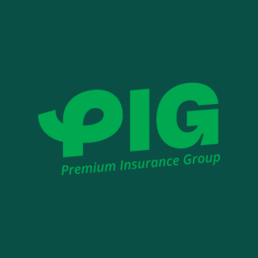
Um novo capítulo nas relações comerciais entre Brasil e EUA
Cada pin da BACC-SE representa a confiança e a credibilidade construídas ao longo do nosso trabalho.
Conectando pessoas, ideias e oportunidades.